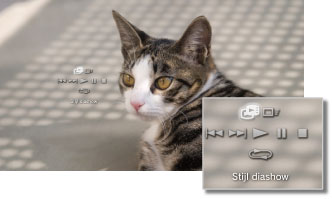

Foto > Beelden als diashow bekijken
Beelden als diashow bekijken
Elk beeld wordt automatisch in volgorde weergegeven. Nadat u het pictogram voor een map of medium hebt geselecteerd en vervolgens op de START-toets hebt gedrukt, zal de diashow beginnen.
Opmerkingen
- De diashow kan ook worden opgestart vanuit het bedieningspaneel of het optiesmenu voor een afbeelding.
- Als de diashow niet kan worden opgestart door op de START-toets te drukken, dan voert u deze handeling uit via het bedieningspaneel.
Het bedieningspaneel voor de diashow gebruiken
Nadat u op de  -toets hebt gedrukt, wordt het bedieningspaneel weergegeven.
-toets hebt gedrukt, wordt het bedieningspaneel weergegeven.

 |
Stijl diashow | Selecteer één van de vijf weergavepatronen voor diashows. |
|---|---|---|
 |
Snelheid diashow | Selecteer één van de drie diashowsnelheden: [Snel] > [Normaal] > [Langzaam]. |
 |
Vorige | Ga naar het vorige beeld. |
 |
Volgende | Ga naar het volgende beeld. |
 |
Afspelen | De diashow starten. |
 |
Pauze | De diashow pauzeren. |
 |
Stoppen | De diashow beëindigen. |
 |
Herhalen | De diashow herhaaldelijk afspelen. |
Opmerking
Wanneer (Stijl diashow) is ingesteld op [Fotoalbum] of [Fotoalbum 2], gebruikt u de rechter joystick van de SIXAXIS™ draadloze controller om functies te bedienen zoals de afbeelding vergroten of verkleinen of de snelheid van de diashow aanpassen.
Een diashow weergeven als er muziek speelt
U kunt een diashow en muziek tegelijkertijd weergeven.
1. |
Start het afspelen van muziek onder |
|---|---|
2. |
Druk op de PS-toets. |
3. |
Ga naar |
 (Muziek).
(Muziek). (Foto), selecteer de afbeeldingen of de map die u als diashow wilt weergeven en druk vervolgens op START-toets.
(Foto), selecteer de afbeeldingen of de map die u als diashow wilt weergeven en druk vervolgens op START-toets.Opmerkingen
- Als u tijdens de gelijktijdige weergave op de PS-toets drukt, wordt het XMB™-menu weergegeven en kunt u de muziek of afbeeldingen wijzigen.
- Om te stoppen, moet u de weergave van de diashow en de muziek apart stoppen. Na het stoppen van een van beide, selecteert u de track of afbeelding die wordt weergegeven en stopt u de weergave.
- Een diashow en een Super Audio CD kunnen niet tegelijkertijd worden weergegeven.
- Als
 (Instellingen) >
(Instellingen) >  (Muziekinstellingen) > [Uitvoerfrequentie] ingesteld is op [44,1/88,2/176,4 kHz], kunt u niet tegelijk muziekcontent en een diavoorstelling afspelen.
(Muziekinstellingen) > [Uitvoerfrequentie] ingesteld is op [44,1/88,2/176,4 kHz], kunt u niet tegelijk muziekcontent en een diavoorstelling afspelen.
Let op
Super Audio CD's kunnen niet afgespeeld worden op sommige PS3™-toestellen. Raadpleeg [Types afspeelbare discs] voor meer informatie.